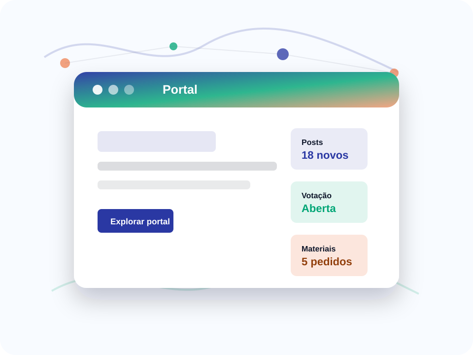

Conteúdos da turma
Posts e atividades ajudam estudantes que faltaram a acompanhar a rotina.
Posts, avisos, votações e projetos estudantis em um portal.
Um portal para publicar posts, artigos, atividades, avisos, feiras, votações de líderes e solicitações de materiais para projetos dos alunos.

Posts e atividades ajudam estudantes que faltaram a acompanhar a rotina.
Eleições para líderes, conselheiros e grêmio podem ser organizadas no portal.
Solicitações de insumos apoiam ideias estudantis e feiras.
Aluno que faltou consulta resumo da aula, anexo e tarefa pendente.
Candidatos, prazo e resultado parcial ficam em um espaço organizado.
Projetos estudantis registram insumos necessários para análise.
Post fictício reúne conteúdo, atividade e aviso para quem faltou.
O portal ajuda estudantes a recuperar o que perderam sem depender de mensagens soltas.
Interações nesta visita: 0
Atividades e artigos recentes.
Líder de turma até sexta.
Solicitações em análise.